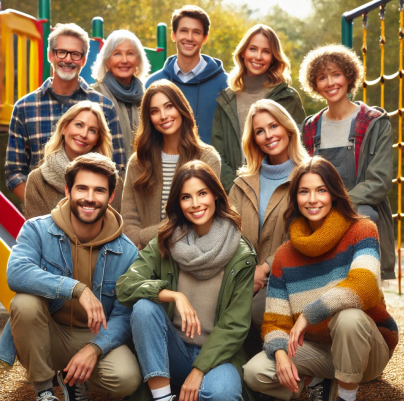
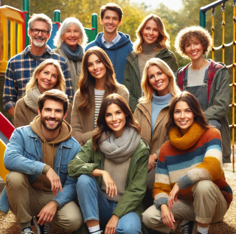

Hvem er vi
Velkommen til Børnegården Katholt
Et sted, hvor barndommen ikke blot leves, men virkelig udleves
Vi er en privat aldersintegreret institution, som omfatter både
børnehave og fritidshjem, hvor børn og familier mødes i trygge,
inspirerende og hjertevarme rammer.
Vores historie begynder i marts 1973, da flaget første gang blev
hejst for Unge Hjems Børnehave.
I 1983 åbnede Skjern Fritidshjem, og de to selvejende institutioner
blev hurtigt hjørnesten i lokalsamfundet.
Den 1. januar 2004 fusionerede vi og fik vores nuværende navn,
Børnegården Katholt. Kulminationen på sammenlægningen kom i 2006,
da vi flyttede under ét tag med nybyggede faciliteter,
der stadig danner rammen om vores hverdag.
I 2012 og 2014 blev fritidshjemmet og børnehaven privatiseret,
og vi har siden fungeret som én samlet privat institution.


 
